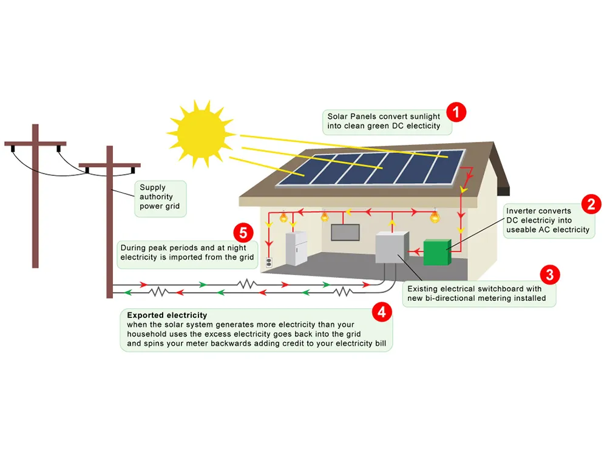
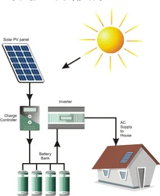
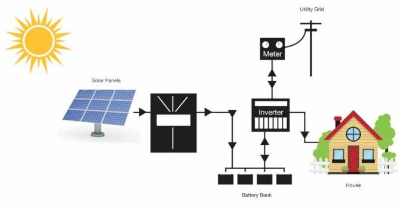

Knowledge Hub
Types of Solar Panel
Monocrystalline Solar Panels:
Solar panels that are monocrystalline are composed of a single crystal structure, usually silicon. They are known for their high efficiency and space-saving design. Monocrystalline panels have a uniform dark color and are easily recognizable by their rounded edges. These panels perform well in low-light conditions and have a long lifespan, making them a popular choice for residential and commercial installations where space is limited.
Polycrystalline Solar Panels:
Polycrystalline solar panels are made from multiple silicon crystals melted together. They have a speckled blue color and square edges, distinguishing them from monocrystalline panels. While polycrystalline panels are generally less efficient than monocrystalline panels, they are more cost-effective to produce. They are suitable for installations with ample roof space and where budget is a concern.
Thin Film Solar Panels:
Thin-film solar panels are made by depositing thin layers of photovoltaic material onto a substrate such as glass, metal, or plastic. They are lightweight, flexible, and can be integrated into various surfaces, including roofs, facades, and even clothing. Thin-film panels have a lower efficiency compared to crystalline silicon panels but offer advantages in terms of versatility and aesthetics. They perform better in high-temperature environments and are less affected by shading.
Bifacial Solar Panels:
Bifacial solar panels have the unique feature of generating electricity from both the front and rear sides of the panel. They are typically made of crystalline silicon and have a transparent backsheet, allowing sunlight to pass through and be reflected onto the rear side of the cells. Bifacial panels can increase energy output by capturing reflected sunlight from surfaces such as rooftops or the ground. They are suitable for installations with reflective surfaces and can provide higher yields in certain environments compared to traditional single-sided panels.
Types of Home Solar System
On Grid Solar System
A photovoltaic (PV) power generation system that is linked to the electrical grid is called an on-grid solar system, sometimes referred to as a grid-tied or grid-connected solar system. It makes it possible to use solar energy on a property directly, and any extra can be sent back into the grid to gain credits or other benefits.
An energy-generating solar system that is linked to the utility grid is called an on-grid system. Following its routing to the grid, the electricity generated by the system powers the different appliances. Any extra electricity is sent back to the grid at any given time.
Compared to off-grid systems, on-grid solar systems are far more appealing. The production of solar power in an on-grid system is contingent upon the availability of the grid. In the event that the grid is unavailable, the power supply is totally switched off. Therefore, for an emergency power supply, one must rely on backups like DG sets. For technological and safety-related concerns, the power is typically turned off.
How does on grid solar power system works?
The electrical supply for this system can go both from the user's house to the grid, to which it is linked, and vice versa. The on-grid solar system is economical and very practical because of this aspect. 'Tied' to the grid are the solar panels that are mounted on the user's house. Direct Current (DC) electricity is produced by the solar panels from solar radiation. After that, this current is sent to an inverter. The electrical products are then powered by the solar inverter, which transforms the DC into Alternating Current (AC). The grid receives this electricity after it has been routed and is used on a daily basis.
Since the majority of the power generated is far more than what a home requires or can handle, the grid-tied inverter also controls the quantity and voltage of electricity sent to the household. The net meter is a significant element. It's a device that keeps track of the energy that is consumed and supplied to the grid. Every month at the conclusion, a bill is given to the customer and the amount yet unpaid is noted. Homes then use this "converted" power source via the primary electrical distribution panel.
Benefits of on grid solar
- Zero Electricity Bills
- Easy maintenance
- Passive income generation
Off Grid Solar System
Off-grid solar systems are autonomous power generation systems that function without being linked to the main electrical grid. In order to create, store, and convert solar energy for on-site consumption—thereby enabling the provision of electricity in remote or isolated regions without reliance on external power sources—it usually consists of solar panels, energy storage (batteries), and inverters.
Off-grid solar power systems function technically by combining a number of interconnected parts to generate electricity on their own in places where there is no connection to the main electrical grid. Direct current (DC) electricity is produced from sunlight through the use of photovoltaic modules. Battery health is protected against overcharging by a charge controller, which controls the charging process. When solar production isn't enough, the energy produced is kept in a battery bank, serving as a reserve. The use of conventional appliances is made easier by an inverter, which changes direct current (DC) to alternating current (AC). Electricity for on-site loads is distributed by the AC load panel. For prolonged times of low sunshine, it is optional to incorporate a backup generator. Systems performance is tracked by monitoring systems, and users need to carefully control energy use to maintain self-sufficiency. To perform at its best, solar panels need to be cleaned and batteries need to be checked often. As a dependable and sustainable power source, the off-grid solar system permits energy independence in isolated areas.
Benefits of Off-Grid Solar Power Systems
- Makes you completely energy independent
- Installation possible virtually anywhere
- Sets you free from rising electricity charges
- An easy alternative for the rural areas
- Environment friendly
Hybrid Solar System
A hybrid solar power system is one that integrates photovoltaic (PV) solar panels with another energy source, usually a conventional power grid and a battery storage system. Increased efficiency, dependability, and the capacity to produce power even in the absence of solar energy are made possible by this integration, providing a flexible and sustainable energy source.
To provide a comprehensive and adaptable energy solution, a hybrid solar power system integrates solar photovoltaic (PV) panels, batteries for energy storage, and frequently an electrical grid connection. In order to generate alternating current (AC) for residential use, sunlight is captured by solar panels and converted to direct current (DC). An uninterrupted power supply is made possible during times of poor solar generation by storing excess solar energy in batteries via a charge controller. Using stored energy when solar output is insufficient, the system intelligently controls the flow of electricity. If connected, it also interacts with the grid to provide backup power or to feed excess energy back into it. Easily switch between solar, battery, and grid power with the help of a hybrid inverter or inverter/charger.
With this advanced configuration, energy efficiency, grid independence, and enhanced resilience against variations in solar availability are all possible.
Benefits of hybrid solar system
- Energy Independence
- Optimized Energy Utilization
- Reliability and Resilience
- Enhanced Resilience
- Environmental Sustainability
EB Power generation , Transmission and Distribution
Electricity Generation:
Electricity generation typically begins with a primary energy source, such as fossil fuels, nuclear reactions, sunlight, wind, or flowing water. Once the primary energy source is converted into mechanical energy, it's typically done through specific mechanisms tailored to the energy source. For instance, in fossil fuel-based power plants, combustion occurs in a furnace, heating water to produce steam. In nuclear power plants, nuclear reactions heat water to generate steam. In hydropower plants, the flow of water turns turbines directly.
Following its acquisition, mechanical energy is fed into a generator, which is essentially a device that transforms mechanical energy into electrical energy. Generators often consist of a rotor (rotating part) and a stator (stationary part) containing coils of wire. As the rotor spins, it creates a changing magnetic field around the coils in the stator. This changing magnetic field induces an electric current in the coils, according to Faraday's law.
Usually, the generator produces power in the form of alternating current (AC). This AC electricity then undergoes several processes to make it suitable for transmission and use. It may pass through transformers to increase voltage for efficient transmission over long distances. Additionally, it might go through rectifiers to convert it from AC to direct current (DC) for specific applications.
Finally, the electricity is transmitted through power lines to substations, where its voltage is adjusted for local distribution. From there, it's distributed to homes, businesses, and industries, powering appliances, lighting, machinery, and various other electrical devices
Transmission:
Electricity transmission is the process of transporting electrical energy from power plants to various destinations, such as homes, businesses, and industries. Once electricity is generated, it travels through a complex network of transmission lines, substations, and transformers to reach its final destination. Transmission lines, typically made of conductive materials like aluminum or copper, carry electricity over long distances, often spanning hundreds of miles. These transmission lines are supported by towers or poles to ensure they remain elevated and insulated from the ground.
The transmission process involves several key components to ensure efficient and reliable delivery of electricity. Substations play a crucial role in this process, serving as intermediate points along the transmission network. At substations, the voltage of the electricity may be adjusted using transformers to optimize its transmission efficiency and safety. High-voltage transmission lines are used for long-distance transmission because higher voltages reduce energy losses during transportation.
Transformers are another vital component of the transmission system, as they allow for the conversion of electrical voltage levels. Step-up transformers increase voltage for long-distance transmission, reducing energy losses, while step-down transformers decrease voltage to safer levels for local distribution. Additionally, capacitors and reactors may be employed along transmission lines to improve power factor and control voltage levels.
Overall, electricity transmission plays a critical role in ensuring the reliable and efficient delivery of electrical energy from power generation facilities to end-users. It involves a sophisticated infrastructure of transmission lines, substations, transformers, and other components to maintain the stability and integrity of the electrical grid.
Distribution:
Electricity distribution involves the final phase of delivering electrical power from generation sources to end-users across communities. Once electricity reaches substations, its voltage is lowered to safer levels for local distribution. From there, the electricity flows through an intricate network of distribution lines, which may be overhead wires or buried underground cables, reaching neighbourhoods, commercial districts, and industrial areas. Along these distribution lines, transformers adjust voltage levels as required, ensuring compatibility with the needs of different locations. Distribution transformers, commonly situated on utility poles or within substations, play a crucial role in this process, facilitating the reduction of voltage for safe use in homes and businesses. Through this interconnected system, electricity is efficiently and reliably distributed to various places, meeting the diverse energy demands of society.